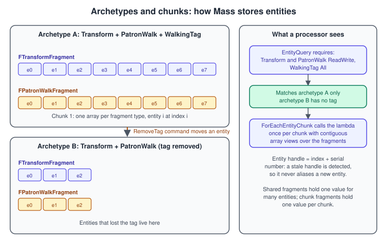
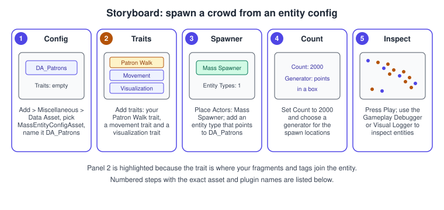
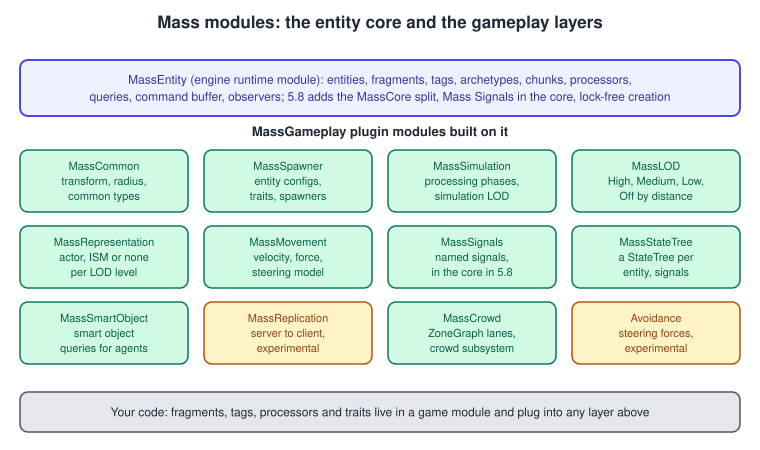

Mass Entity
|
This content was generated with the assistance of AI and should be verified against the official documentation before being relied on in production. |
An Actor in Unreal Engine is a rich object with components, replication, a lifecycle and a place in the world. That richness costs memory and time, and it stops scaling somewhere in the low thousands. Mass is Unreal’s answer for the cases where you need tens of thousands of simple agents: crowds, traffic, flocks, ambient life. It is a data-oriented entity framework, the engine’s counterpart of an entity component system: an entity is just an ID, its data is stored in tightly packed arrays by type, and processors run over those arrays in bulk. This is the same idea described engine-neutrally in Entity Component System and, for Unity, in DOTS: ECS, Jobs and Burst.
The facts on this page were checked in November 2026 against the Unreal Engine 5.8 documentation (released 2026-06-17; the latest hotfix found is 5.8.4). The 5.8 release notes describe a major overhaul of Mass, with a new MassCore module that separates the core entity system from the wider MassGameplay stack; the text below says where the overhaul matters. The MassEntity module is an engine runtime module, and the gameplay modules (MassCommon, MassSpawner, MassLOD, MassRepresentation and others) belong to the MassGameplay plugin that you enable per project. Mass runs on every platform that Unreal builds for. In the Bookshelf, Mass fills the reading room of L_Library with 2,000 patrons who wander between random points, which is far more than the single ALibrarianCharacter on AI, Navigation and Perception could be repeated. Decision-making for single characters is on Behavior Trees and StateTree, and the actor model that Mass avoids is on Actors and Components.
The ECS model in Mass

The vocabulary, as Epic defines it:
| Term | Meaning |
|---|---|
Entity |
A collection of fragments associated with an ID ( |
Fragment |
An atomic piece of data used in calculations, such as a transform, a velocity or a LOD index. Fragments are |
Tag |
A fragment with no data, derived from |
Archetype |
A group of entities with an identical composition of fragments and tags. The |
Chunk |
The memory block in which an archetype stores its entities. Inside a chunk each fragment type has its own contiguous array, which is what makes bulk processing fast. |
Shared fragment |
One value shared by many entities ( |
Chunk fragment |
A fragment attached to a chunk instead of an entity, for per-chunk data such as LOD management. |
Processor |
A stateless class ( |
Entity query |
|
Command buffer |
|
Entity view |
|
Trait |
A named bundle of fragments and processors that supplies a behavior (avoidance, look-at target, StateTree). Traits are listed in an entity config asset, and the engine builds an entity template from them. |
New in 5.8, the overhaul also introduced a sparse or virtual fragment system. A sparse fragment or tag is stored outside the archetype so that optional elements can be added or removed without the costly archetype changes that a normal fragment causes. The command classes accept FMassFragment, FMassTag, FMassSparseFragment and FMassSparseTag; shared and chunk fragments need their own calls.
Mass is built from world subsystems, so its lifetime matches the world: UMassEntitySubsystem hosts the default FMassEntityManager of a UWorld, and GetMutableEntityManager returns it. The manager is meant to be held in TSharedPtr or TSharedRef.
Processors, queries and the frame
A processor’s job is split in two. ConfigureQueries runs once and states requirements; Execute runs every frame and iterates the matching entities. Each requirement has an access mode and a presence:
| Setting | Values |
|---|---|
|
|
|
|
Queries add requirements with AddRequirement for fragments, AddTagRequirement for tags, AddChunkRequirement, AddSharedRequirement, AddConstSharedRequirement and AddSubsystemRequirement. ForEachEntityChunk calls a lambda once per chunk with a FMassExecutionContext, from which the processor reads the arrays: GetFragmentView (read-only), GetMutableFragmentView (writable), GetNumEntities, GetDeltaTimeSeconds, GetEntity(Index), the shared and chunk fragment getters, GetSubsystem and Defer, which returns the command buffer.
When it runs. A processor chooses an EMassProcessingPhase: PrePhysics, StartPhysics, DuringPhysics, EndPhysics, PostPhysics or FrameEnd. Inside a phase, ExecutionOrder (ExecuteInGroup, ExecuteBefore, ExecuteAfter) states ordering constraints, and ExecutionFlags select the net modes (client, server, standalone, editor) it runs in. The engine resolves the constraints and the declared fragment access into a dependency graph and schedules independent processors on several threads; the 5.8 overhaul reworked this dependency resolution for better use of many cores. Processors that touch the game world, such as actors, must run on the game thread (DoesRequireGameThreadExecution).
Changing composition. A processor must not change an entity’s composition while it iterates, because that would move the entity between chunks under the loop. It queues the change through the command buffer (Context.Defer()), and the commands are applied at the end of the batch.
Observers. A UMassObserverProcessor reacts to entity operations instead of running every frame. It declares the element types it cares about in ObservedTypes and the operations in ObservedOperations (for example a fragment being added to or removed from an entity), and runs when entities are created, destroyed or change composition. Use them to initialise data when a fragment appears. In 5.8 observer notifications were made thread safe.
Signals. Sleeping entities do no work. A signal is a named message without payload that wakes an entity so that a processor handles it. MassSignals is part of the core engine from 5.8 and MassStateTree uses it to update an entity’s StateTree only when something happened.
Complete example: the Bookshelf patrons
The example defines the data of a walking patron (a fragment and a tag), the processor that moves patrons toward random destinations and, after five destinations, sits them down by removing the tag, a trait that attaches the data to an entity config, and a small subsystem that spawns entities from code. Plugins and modules are listed after the code. The names follow the Mass conventions: F for fragments and tags, U for processors and traits.
// PatronWalkProcessor.h
#pragma once
#include "CoreMinimal.h"
#include "MassEntityTypes.h"
#include "MassEntityQuery.h"
#include "MassProcessor.h"
#include "PatronWalkProcessor.generated.h"
/** Per-entity walking state of a library patron. */
USTRUCT()
struct BOOKSHELF_API FPatronWalkFragment : public FMassFragment
{
GENERATED_BODY()
FVector Target = FVector::ZeroVector;
float Speed = 120.f;
int32 DestinationsReached = 0;
bool bHasTarget = false;
};
/** Present while the patron is walking; removed when it sits down. */
USTRUCT()
struct BOOKSHELF_API FPatronWalkingTag : public FMassTag
{
GENERATED_BODY()
};
/** Moves every walking patron toward its target and picks new targets. */
UCLASS()
class BOOKSHELF_API UPatronWalkProcessor : public UMassProcessor
{
GENERATED_BODY()
public:
UPatronWalkProcessor();
protected:
virtual void ConfigureQueries(const TSharedRef<FMassEntityManager>& EntityManager) override;
virtual void Execute(FMassEntityManager& EntityManager, FMassExecutionContext& Context) override;
/** Half size of the rectangle, centred on the world origin, in which patrons pick destinations. */
UPROPERTY(EditDefaultsOnly, Category = "Patron")
FVector2D WalkHalfExtent = FVector2D(1500.0, 1500.0);
/** A patron sits down after this many destinations. */
UPROPERTY(EditDefaultsOnly, Category = "Patron", meta = (ClampMin = "1"))
int32 DestinationsBeforeSitting = 5;
private:
FMassEntityQuery EntityQuery;
};// PatronWalkProcessor.cpp
#include "PatronWalkProcessor.h"
#include "MassCommonFragments.h"
#include "MassExecutionContext.h"
UPatronWalkProcessor::UPatronWalkProcessor()
: EntityQuery(*this) // registers the query with this processor
{
// Run on clients and in standalone games; patrons are cosmetic and not replicated.
ExecutionFlags = static_cast<int32>(EProcessorExecutionFlags::Client | EProcessorExecutionFlags::Standalone);
ProcessingPhase = EMassProcessingPhase::PrePhysics;
ExecutionOrder.ExecuteInGroup = FName(TEXT("Bookshelf.Patrons"));
}
void UPatronWalkProcessor::ConfigureQueries(const TSharedRef<FMassEntityManager>& EntityManager)
{
EntityQuery.AddRequirement<FTransformFragment>(EMassFragmentAccess::ReadWrite, EMassFragmentPresence::All);
EntityQuery.AddRequirement<FPatronWalkFragment>(EMassFragmentAccess::ReadWrite, EMassFragmentPresence::All);
EntityQuery.AddTagRequirement<FPatronWalkingTag>(EMassFragmentPresence::All);
}
void UPatronWalkProcessor::Execute(FMassEntityManager& EntityManager, FMassExecutionContext& Context)
{
EntityQuery.ForEachEntityChunk(EntityManager, Context, [this](FMassExecutionContext& ChunkContext)
{
const float DeltaTime = ChunkContext.GetDeltaTimeSeconds();
const TArrayView<FTransformFragment> Transforms = ChunkContext.GetMutableFragmentView<FTransformFragment>();
const TArrayView<FPatronWalkFragment> Walks = ChunkContext.GetMutableFragmentView<FPatronWalkFragment>();
// Fragment arrays are contiguous: entity i is element i of both views.
for (int32 Index = 0; Index < ChunkContext.GetNumEntities(); ++Index)
{
FTransform& Transform = Transforms[Index].GetMutableTransform();
FPatronWalkFragment& Walk = Walks[Index];
const FVector Location = Transform.GetLocation();
if (!Walk.bHasTarget || FVector::DistSquared2D(Location, Walk.Target) < FMath::Square(50.f))
{
if (Walk.bHasTarget && ++Walk.DestinationsReached >= DestinationsBeforeSitting)
{
// Never change composition here: queue it. The tag disappears at the end of the batch.
ChunkContext.Defer().RemoveTag<FPatronWalkingTag>(ChunkContext.GetEntity(Index));
continue;
}
Walk.Target = FVector(FMath::FRandRange(-WalkHalfExtent.X, WalkHalfExtent.X),
FMath::FRandRange(-WalkHalfExtent.Y, WalkHalfExtent.Y), Location.Z);
Walk.bHasTarget = true;
}
const FVector Direction = (Walk.Target - Location).GetSafeNormal2D();
Transform.SetLocation(Location + Direction * Walk.Speed * DeltaTime);
Transform.SetRotation(Direction.ToOrientationQuat());
}
});
}// PatronWalkTrait.h
#pragma once
#include "CoreMinimal.h"
#include "MassEntityTraitBase.h"
#include "PatronWalkTrait.generated.h"
/** Adds the walking data to an entity config. Appears as "Patron Walk" in the trait list. */
UCLASS(meta = (DisplayName = "Patron Walk"))
class BOOKSHELF_API UPatronWalkTrait : public UMassEntityTraitBase
{
GENERATED_BODY()
public:
virtual void BuildTemplate(FMassEntityTemplateBuildContext& BuildContext, const UWorld& World) const override;
/** Walking speed in centimetres per second. */
UPROPERTY(EditAnywhere, Category = "Patron", meta = (ClampMin = "10.0"))
float WalkSpeed = 120.f;
};// PatronWalkTrait.cpp
#include "PatronWalkTrait.h"
#include "MassCommonFragments.h"
#include "MassEntityTemplateRegistry.h"
#include "PatronWalkProcessor.h"
void UPatronWalkTrait::BuildTemplate(FMassEntityTemplateBuildContext& BuildContext, const UWorld& World) const
{
// The processor needs a transform; asking for it here keeps the trait self-contained.
BuildContext.AddFragment<FTransformFragment>();
// A fragment with initial values: set them on a local copy and add that.
FPatronWalkFragment Walk;
Walk.Speed = WalkSpeed;
BuildContext.AddFragment(FConstStructView::Make(Walk));
BuildContext.AddTag<FPatronWalkingTag>();
}// PatronSpawnSubsystem.h
#pragma once
#include "CoreMinimal.h"
#include "Subsystems/WorldSubsystem.h"
#include "PatronSpawnSubsystem.generated.h"
/** Creates patron entities directly through the entity manager (no spawner actor needed). */
UCLASS()
class BOOKSHELF_API UPatronSpawnSubsystem : public UWorldSubsystem
{
GENERATED_BODY()
public:
/** Creates Count entities at random places inside Area; returns how many were created. */
UFUNCTION(BlueprintCallable, Category = "Bookshelf|Mass")
int32 SpawnPatrons(int32 Count, const FBox& Area);
};// PatronSpawnSubsystem.cpp
#include "PatronSpawnSubsystem.h"
#include "MassCommonFragments.h"
#include "MassEntitySubsystem.h"
#include "PatronWalkProcessor.h"
int32 UPatronSpawnSubsystem::SpawnPatrons(int32 Count, const FBox& Area)
{
UMassEntitySubsystem* MassSubsystem = GetWorld()->GetSubsystem<UMassEntitySubsystem>();
if (!MassSubsystem || Count <= 0)
{
return 0;
}
FMassEntityManager& EntityManager = MassSubsystem->GetMutableEntityManager();
// One archetype for the whole crowd: two fragments and one tag.
const TArray<const UScriptStruct*> Composition = {
FTransformFragment::StaticStruct(),
FPatronWalkFragment::StaticStruct(),
FPatronWalkingTag::StaticStruct()
};
const FMassArchetypeHandle Archetype = EntityManager.CreateArchetype(Composition, FMassArchetypeCreationParams());
// The creation context batches observer notifications until it goes out of scope.
TArray<FMassEntityHandle> Entities;
const auto CreationContext = EntityManager.BatchCreateEntities(Archetype, Count, Entities);
for (const FMassEntityHandle Entity : Entities)
{
const FVector Location(FMath::FRandRange(Area.Min.X, Area.Max.X), FMath::FRandRange(Area.Min.Y, Area.Max.Y), Area.Min.Z);
EntityManager.GetFragmentDataChecked<FTransformFragment>(Entity).SetTransform(FTransform(Location));
}
return Entities.Num();
}// Bookshelf.Build.cs: add the Mass modules to the dependencies you already have.
using UnrealBuildTool;
public class Bookshelf : ModuleRules
{
public Bookshelf(ReadOnlyTargetRules Target) : base(Target)
{
PCHUsage = PCHUsageMode.UseExplicitOrSharedPCHs;
PublicDependencyModuleNames.AddRange(new string[]
{
"Core", "CoreUObject", "Engine",
"MassEntity", "MassCommon", "MassSpawner"
});
}
}{
"Plugins": [
{ "Name": "MassGameplay", "Enabled": true }
]
}Source: UMassProcessor API, FMassEntityManager API, UMassEntityTraitBase API and FMassEntityTemplateBuildContext::AddFragment API
Mass processors are discovered automatically: a UMassProcessor subclass registers itself with its processing phase when the module loads, so there is nothing to place in a level. Fragments here are plain data, not UPROPERTY members; a fragment that holds UObject pointers needs UPROPERTY so that the garbage collector can see them, and Epic’s guidance is to avoid such references in fragments because they defeat the point of packed data. Check module and header names against the API reference of your exact engine version, because the 5.8 overhaul introduced the MassCore module.
Entity configs, spawners and representation
An entity config (UMassEntityConfigAsset) is a data asset that lists traits; it can inherit the traits of a parent config. The engine builds an entity template from it (the FMassEntityTemplateData that the trait’s BuildTemplate fills) and a spawner creates entities from the template. A trait adds fragments, tags and processor requirements; ValidateTemplate runs once all traits have been processed and fragment requirements have been checked. A Mass Spawner (AMassSpawner) is an actor placed in the level that spawns entities from the entity types you assign, using a count and a generator for locations (the documentation names the Mass Entity Distribution Instance Generator), or from procedural calls; it owns a template registry. Programmatic spawning, as SpawnPatrons does, skips the template and the visual traits, so entities created that way have data but no representation until you add it.

-
Enable the MassGameplay plugin in Edit > Plugins and restart the editor. Add the module dependencies from the Build.cs above and compile the C++ classes.
-
In the Content Browser create a data asset of the class
MassEntityConfigAssetand name itDA_Patrons. -
Open it and add traits: your Patron Walk trait plus the movement and visualization traits you need for the crowd (see the representation section below for how representation uses them).
-
Place a Mass Spawner in
L_Library. Add an Entity Type that points toDA_Patrons, set the Count and choose a generator that provides the locations. -
Press Play. Use the Gameplay Debugger (backtick key, then the Mass categories such as the entity overview) or the Visual Logger to inspect entities.
Representation and level of detail
An entity has no mesh. The MassRepresentation module decides how an entity appears: each representation LOD can be a high-resolution actor, a low-resolution actor, an instanced static mesh (ISM) or nothing, and it handles transitions between them and can pool and recycle actors. An ISM is the cheapest option and can be animated with vertex animation; Instanced Static Mesh animation is documented as experimental and not yet supported in every case. MassLOD computes four levels (High, Medium, Low and Off) from configurable distances with per-level caps on the number of entities, and can output a significance value from 0.0 for High to 3.0 for Off. The representation LOD may use different distances for entities inside and outside the camera frustum. Simulation LOD in MassSimulation load-balances the calculations by grouping entities into chunks per LOD and supports a variable update frequency, so distant entities are simulated less often.
Movement, avoidance, StateTree, Smart Objects and crowds

-
Movement.
MassMovementprovides a simple movement model: traits modify velocity or force and the values combine into the final movement. -
Avoidance. Mass Avoidance is force based:
UMassMovingAvoidanceProcessorsums separation and avoidance forces from nearby entities and obstacles and writes the steering force intoFMassForceFragment;UMassStandingAvoidanceProcessorhandles entities standing in place. The documentation labels it Experimental and advises caution when shipping. -
StateTree.
MassStateTreeconfigures a StateTree per entity and updates it from signals; the StateTree sets data so that the right processors run. In 5.8 several Mass StateTree tasks got the agent height fragment because navmesh queries need it, andFMassNavMeshPathFollowTaskhas anOffsetCornersFromBoundariesparameter that pushes wall-hugging corners away from walls. -
Smart Objects.
MassSmartObjectadds the traits, fragments and processors for smart object queries and simple agent behaviors; the Mass Entity Behavior definition type is the Mass counterpart of a Gameplay Behavior (see Behavior Trees and StateTree). -
Crowds and ZoneGraph.
MassCrowdtracks entities that wander on the ZoneGraph, a lightweight, design-driven lane structure for AI, through theUMassCrowdSubsystem. Epic’s City Sample uses Mass for crowds and traffic with separate spawners, ZoneGraph distribution of spawn points, and crowd behavior in StateTree assets linked from the entity config. 5.8 adds an Experimental MetaHuman Crowd plugin whose crowds Mass can simulate, scaling from tens to thousands of characters, with LOD transitions based on camera distance. -
Replication. Mass replication is one-way, server to client, and the documentation labels it experimental; custom replicated values require C++. A replication LOD calculates relevancy per client to save bandwidth. For ordinary actor replication see Networking and Replication.
Mass or actors?
Mass is not a replacement for actors; it is a second tool. A common design keeps a few "hero" actors (the player, the librarian) and uses Mass for the many. The representation module lets one entity become a real actor when it is close to the camera and an instanced mesh or nothing when it is far, so the cost of an actor is paid only where the player can see it.
| Question | Actors | Mass |
|---|---|---|
How many? |
Dozens to low thousands. |
Thousands to many thousands. |
What does each one need? |
Components, Blueprint logic, physics, replication, rich animation. |
A few fragments of data and simple logic in bulk. |
Authoring |
Blueprint and C++, visual editor. |
C++ processors and fragments; traits, configs and spawners in the editor. Blueprint is not the usual way. |
Debugging |
Details panel, Blueprint debugger. |
Gameplay Debugger categories for Mass, Visual Logger, Insights. |
Common mistakes
-
Changing composition inside the loop. Adding or removing a fragment or tag while iterating invalidates the chunk. Queue it with
Context.Defer(). -
Declaring
ReadWriteout of habit. It serialises processors that could run in parallel. UseReadOnlywhen you do not write. -
Forgetting the tag requirement. A processor without
FPatronWalkingTagalso moves seated patrons. -
A query that matches nothing. A missing fragment, a tag in
None, or a processor registered for the wrong net mode meansExecuteruns on zero entities. CheckExecutionFlagsfirst. -
Storing an
FMassEntityViewor a raw pointer into a fragment array. Views are valid only in their scope, and arrays move when entities change archetype. Store theFMassEntityHandleand re-resolve it. -
Using
UObjectpointers in fragments. They needUPROPERTYand defeat the data layout; keep a handle or an ID. -
Per-entity
newor heap allocation inExecute. It destroys the cache benefits. Put shared settings in shared fragments. -
Expecting a visual from a data-only entity. An entity is drawn only if a representation trait is on its config.
-
Shipping experimental parts without a plan. Avoidance, replication, ISM animation and MetaHuman Crowd are documented as experimental.
-
Copying older code verbatim. The Mass API has deprecated overloads (for example the query constructor that takes an initializer list); take current signatures from the API reference.
Performance notes
-
Memory layout. Entities of one archetype are stored column-wise, so a processor that needs two fragments reads two contiguous arrays. Keep fragments small and focused: split rarely used data into its own fragment so that hot loops do not drag it through the cache.
-
Archetype churn. Adding or removing a normal fragment or tag moves the entity to another archetype, which copies its data. Tags that flip constantly belong in sparse tags (5.8) or in a field of a fragment. Spread composition changes over time.
-
Parallelism. Declare access honestly (
ReadOnlywherever possible) and put processors in groups so the scheduler can run independent ones on several threads. Processors that need the game thread serialise the frame, so keep them few and short. -
LOD. Use representation LOD and simulation LOD (variable tick rate) so that distant entities cost little; entity caps per LOD level bound the worst case.
-
Signals. Let idle entities sleep and wake them with signals instead of ticking every entity every frame.
-
Creation. In 5.8 entity creation can happen off the game thread with lock-free, archetype-based scheduling, so large spawns need not hitch the frame.
BatchCreateEntitiesis the entry point for batches. -
Measure with the tools in Profiling and Optimization; for the general approach see Performance and Profiling.
What changed recently
| Version | Change |
|---|---|
UE 5.8 (June 2026) |
Mass framework overhaul: Mass Signals are part of the core engine; entity creation can happen off the game thread using archetype-based, lock-free scheduling; a sparse or virtual fragment system lets optional fragments and tags be added and removed without costly archetype changes; processor execution and dependency resolution were reworked for multi-core use with more granular scheduling and thread-safe observer notifications; a new |
UE 5.8 |
MetaHuman Crowd (Experimental): a plugin that assembles MetaHuman crowds compatible with Mass, with LOD transitions by camera distance. Mass navigation: |
UE 5.8 API reference |
The reference lists both a no-argument |
Source: Unreal Engine 5.8 Release Notes and MassEntity API
Where the books are outdated
None of the six books covers Mass. Unreal Engine 5 Game Development with C++ Scripting (Zhenyu George Li and E. Wyn Roberts) targets UE 5.0 only, and it predates Enhanced Input as the default input system, Mass, StateTree, Motion Matching, MegaLights, Iris and Substrate. The older books (Blueprints Visual Scripting for Unreal Engine by Marcos Romero and Brenden Sewell, Learning Unreal Engine Android Game Development by Nitish Misra, Unreal Development Kit Game Programming with UnrealScript: Beginner’s Guide by Rachel Cordone, Unreal Engine 4.X By Example by Benjamin Carnall and Unreal Engine: Game Development from A to Z by Joanna Lee, John P. Doran and Nitish Misra) target UE 4.x or earlier and use actors for every character; read this page for what changed. In particular, crowds of hundreds of AI pawns, which those books build from actors and UPawnSensingComponent or behavior trees, are what Mass replaces at scale.
See also
-
Entity Component System: the engine-neutral ECS model that Mass implements.
-
DOTS: ECS, Jobs and Burst: Unity’s entity system for comparison.
-
AI, Navigation and Perception: single-agent navigation and senses.
-
Behavior Trees and StateTree: StateTree and Smart Objects, which Mass reuses.
-
Actors and Components: the object model that entities replace for large crowds.
-
UObject, Reflection and Garbage Collection: why fragments are
USTRUCTtypes. -
World Partition and PCG: large worlds that crowds populate.